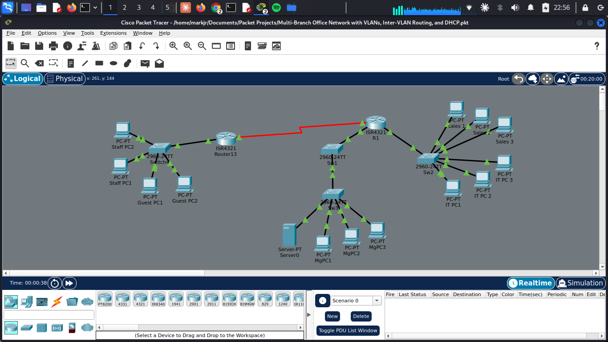

Multi-branch office network with VLANs, inter-VLAN routing and DHCP


A Cisco Packet Tracer network with two sites linked by a WAN connection. Sales, IT, Management, Staff and Guest users sit on separate VLANs, with inter-VLAN routing and DHCP.
Download the Packet Tracer file